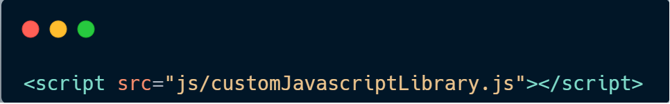

CUSTOM JAVASCRIPT LIBRARY
It is a Library which contains different tools which are very helpful for user.
This Library provides features like:
Accordion Panel
AJAX HTTP Request
Custom Grid With Pagination Feature
Custom Modal
Form Validator
All of these features are ready to use.
It will make your website more dynamic.
To use This Library, just include this script tag to your project :
